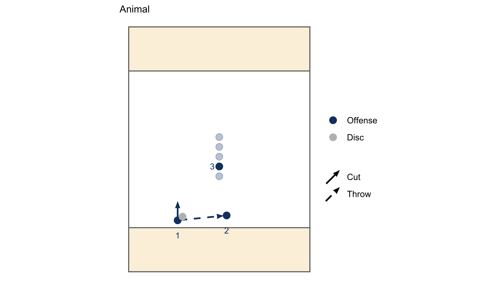
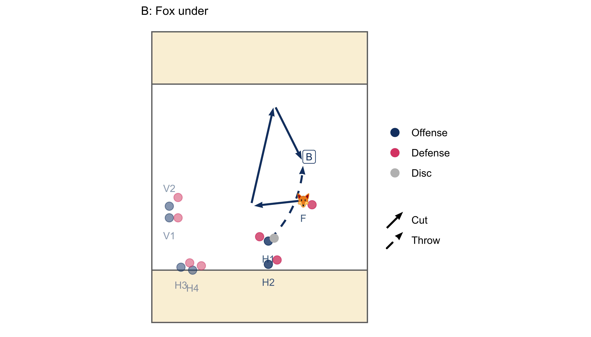
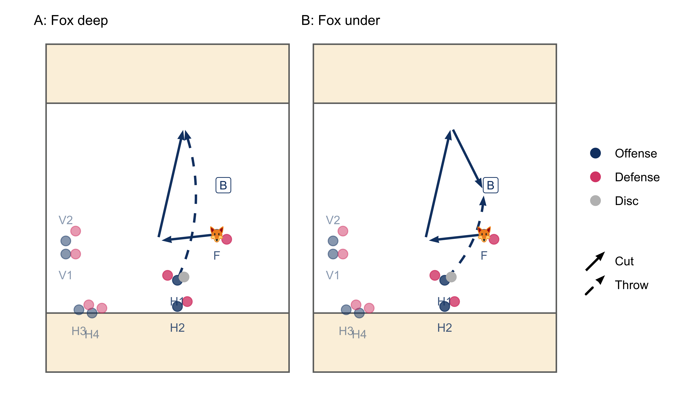
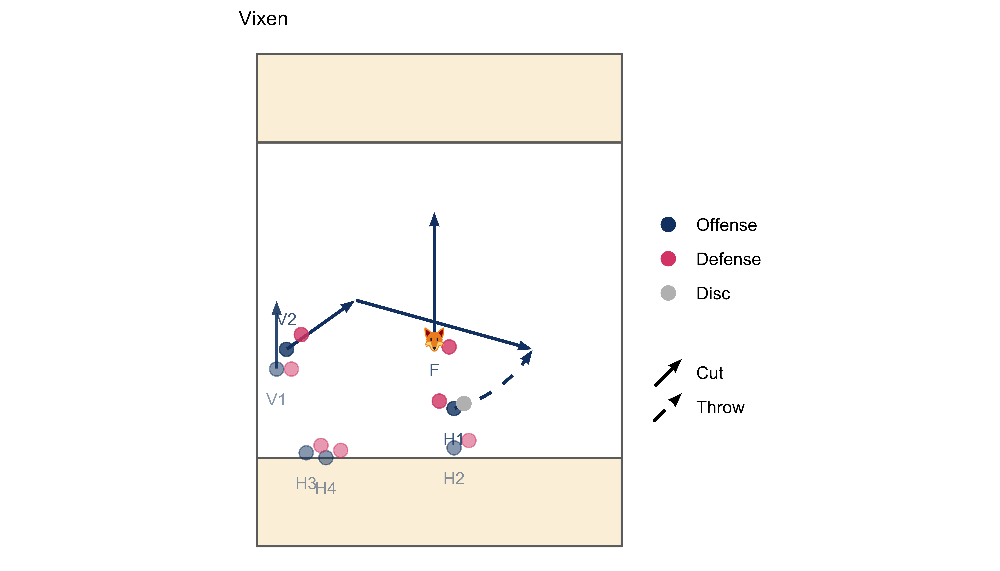
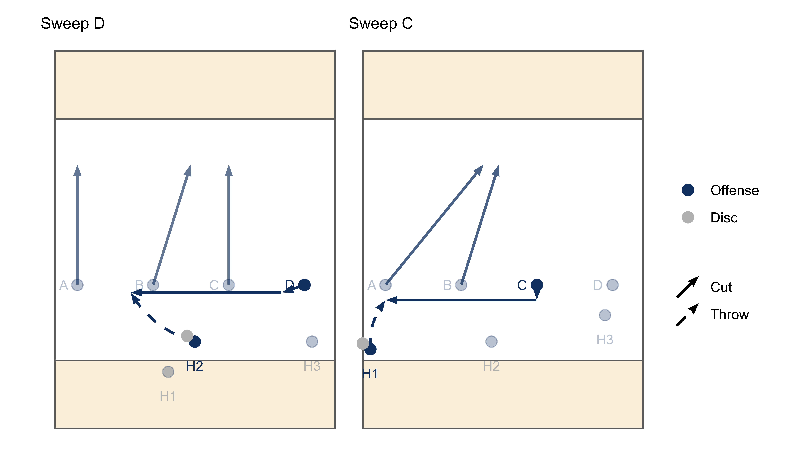
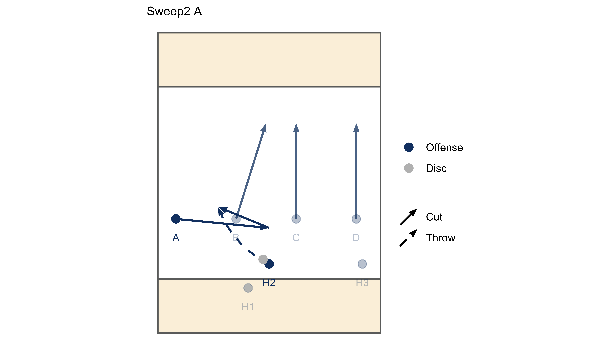

OFFENCE PLAYS
Set plays are a great way to create attacking opportunities with pre-determined cuts. They work best when the offence has time to set up and communicate, so are normally called from a static disc or as a pull play.
The play is just the ideal sequence. Be prepared to adapt your cuts slightly depending on how the defence set up. When you take on a pass, decide to throw because the cutter is open, not because it is part of the play.
If the play doesn’t come off, look for your backup options and transition into a regular playing structure.
Animal
Communication
You can use the word “animal” or any type of animal (other than “Fox”) to initiate the play.
Set up
The play runs out of a vertical stack formation. The vertical stack should set up quite shallow to ensure there is room to attack deep. It is also smart to put your biggest receivers near the front to draw big defenders away from the deep space.
Sequence
- 1 throws to 2 then drifts up-field
- 2 throws to 3 cutting out of the stack as 1 strikes deep on the opposite side
- 3 throws deep to 1
When run from a pull, it is good to have a side in mind that 3 would prefer to throw deep from. However, be prepared to switch it if the pull comes down on the opposite side.
Transition
Although this is a vertical stack play, we want to transition into one of our default offence structures e.g. horizontal or side-stack, whatever is called on the line.
If the deep pass doesn’t go:
- 1 cuts under towards the disc
- 2 and 3 remain as handlers
- The players in the stack push through to active or continuation cutting positions
- The front of stack becomes the third handler
If 1 receives the disc deep:
- 2 and 3 remain as handlers
- Decide whether to transition to the default offence structure or endzone
Fox / Vixen
Communication
Fox can be called as a pull play or from a static disc. It works best when run from the central channel. It should not be called from within ~5m of the sideline as the isolated cutter needs big spaces to operate in.
Set up
The setup for Fox is as follows:
- 1 isolated cutter has an entire side of the field (Fox)
- 2 continuation cutters (Vixens) flooded to the other side
- 2 handlers in the centre
- 1 thrower with the disc
- 1 reset ensuring their mark doesn’t poach in the throwing lane
- 2 flooded handlers on the left side of the field to draw defenders away from the Fox
We normally put the fox on the thrower’s forehand side. This means that the active side of the field is either an open-side forehand huck or a break-side backhand, which are usually quicker throws to release.
Sequence
The Fox is looking to get the disc on a deep strike or their first cut under.
- The Fox has time to clear the throwing lane or set up their deep strike
- Fox strikes deep, attacking the active side of the field (A)
- If the deep shot doesn’t go, the Fox comes under for a big gain (B)


Variations
The defence will often try to counter the deep throw to the Fox by adding a poaching defender in the deep space. This should leave one of the Vixens unmarked. A call of “Vixen” in the Fox set up initiates the following sequence.
- Fox cuts deep
- One of the Vixens* cuts across into the space vacated by the Fox
- *Whoever is poached/most free

Vixen can also be called as a pull play and initiated immediately. This works really well when the defence start to recognise the Fox play.
Transition
The Fox setup transitions easily into horizontal or side-stack. Once an up-field pass is made, the other players should transition into the default offence structure.
It is okay for the active handlers to make a couple of passes to get the disc in a better position to hit the Fox. However, if we can’t hit the Fox on their first few cuts then we want to transition to a default structure. A call of “Vixen” mid-play initiates the transition by activating the continuation cutters.
Sweep
Communication
Sweep can be called on the line as a pull play or from a static disc. The sweeping cutter can be called using the lettering system A, B, C, D for our cutters e.g “Sweep A”.
Set up
Sweep is run from a conventional horizontal stack with 4 cutters spread evenly across the field. It can be called from anywhere on the field.
Sequence
- Non-sweep cutters clear deep
- Sweep cutter cuts across the field into the space vacated by the active cutters
The sweep cutter is normally one of the wide players (A or B). However, when the disc is on the sideline, it is often better to call one of the central cutters (B or C) as they don’t have as far to go to get across the field.
The clearing cutters should clear deep and away from the new throwing lane.

Variations
Sweep2 is a variation of Sweep that initially looks very similar to a conventional Sweep. This can only be run from the centre of the field.
- Non-sweep cutters clear deep
- Sweep cutter cuts into the middle of the field, then back towards the space where they started from

It is good to run this when the defence start to recognise the Sweep play.
Transition
The Sweep setup runs from a horizontal stack, so it makes sense to stay in this structure. One of the deep cutters should provide an immediate under cut when the sweep cutter receives the disc.